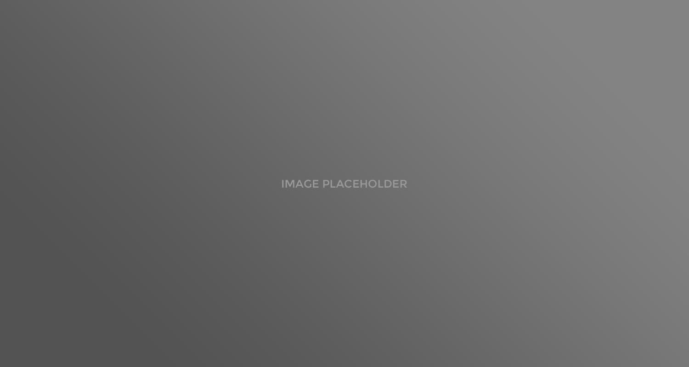

<div class="item-data clearfix element_fade_in">


	
    <!-- Project Close Button -->
    <ul id="project-page-button-fullscreen" class="clearfix">            	
        <li><a id="project_close" class="icon-awesome" href="#" title="Close Project"></a></li>
    </ul>
	<!--/Project Close Button -->
    
    
    
    
    
    <!-- Project Fullscreen Slider -->
    <a href="#" id="arrow_left"></a>
    <a href="#" id="arrow_right"></a>
    
    <div id="maximage">
    
        <div>
            
            <div class="in-slide-content">
                <div class="info-slide">
                    <h2>Image Name one</h2>
                    <p>Add your image description here</h4>
                </div>
            </div>
        </div>
        
        <div>
            
            <div class="in-slide-content">
                <div class="info-slide">
                    <h2>Image Name Two</h2>
                    <p>Add your image description here</h4>
                </div>
            </div>
        </div>
        

    </div>
    <!--/Project Fullscreen Slider -->
            
            
</div>
        
        